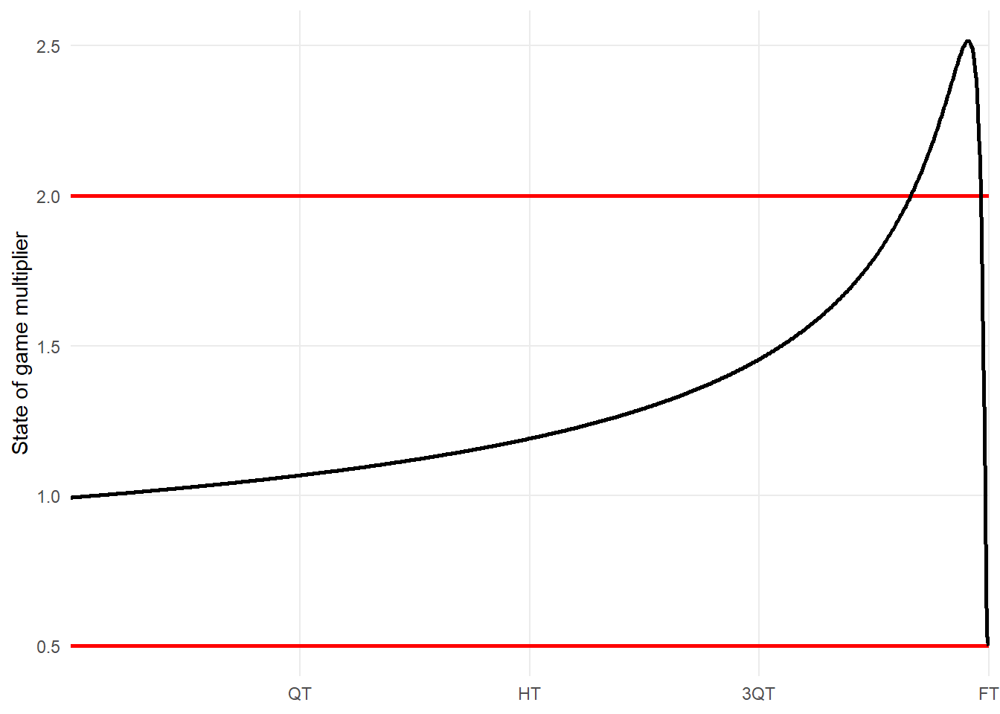
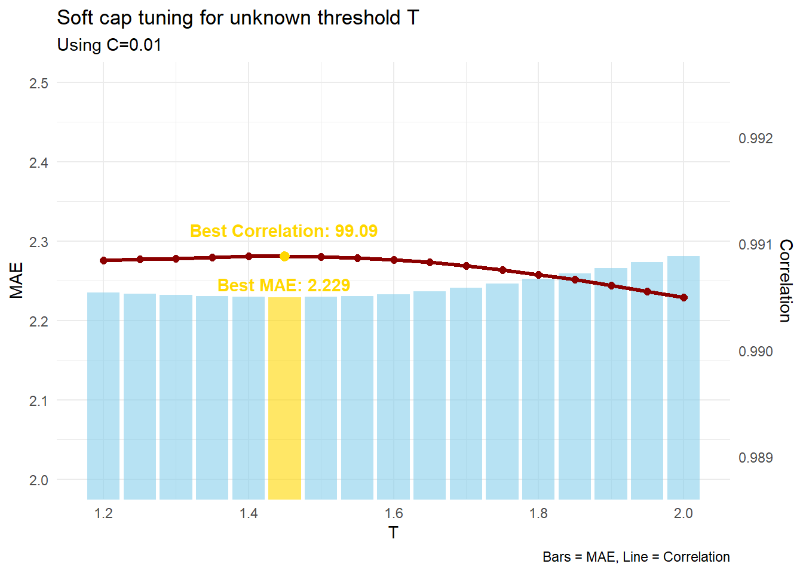
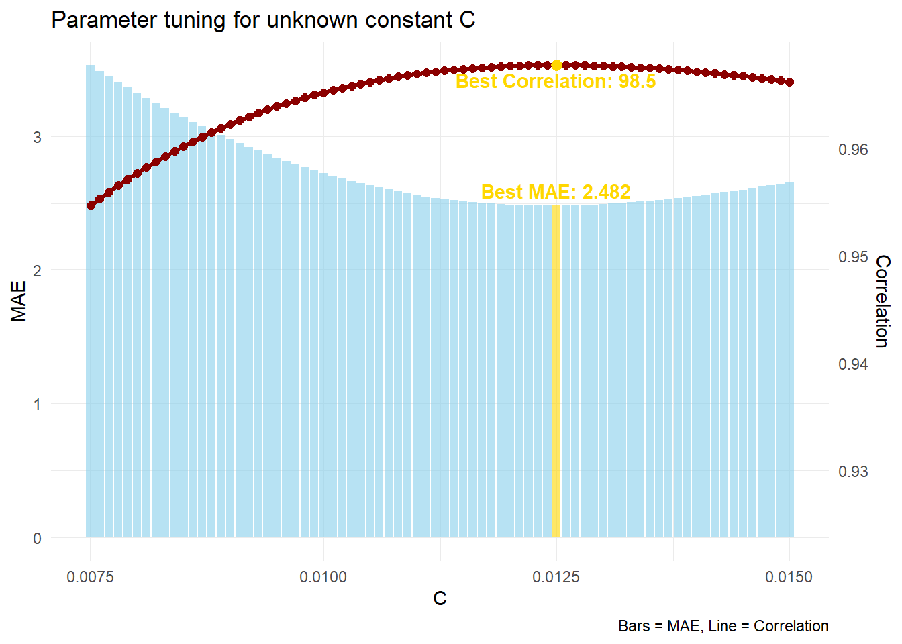
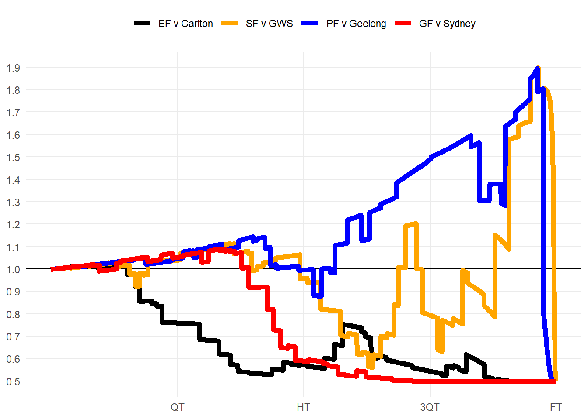

The secrets of SuperCoach scaling
08/07/2025
The scoring system for SuperCoach AFL is incredibly complex. It uses Champion Data’s Ranking Points, a combination of secret formulas and weightings with a lack of information about how it works. The community takes this competition very seriously, so each weekend we see many complaints about player scores and the reasons behind the numbers. The true information would be really nice to have, and I made a good start last year.
In my 2024 article researching SuperCoach scoring, I used a model to find the most “average” value players get rewarded for each action (kick, goal, spoil…). While it was a breakthrough in the community, especially for the data I was able to unlock, it was missing a key element - the state of game multiplier. This capped my accuracy at 96.8% in which I was off by 4.23 points on average.
In this article, I will be attempting to solve the in-match scaling system that is used to weight SuperCoach scores.
What do we know about this “state of game” multiplier?
SuperCoach scores are weighted based on how close the game is - more reward comes from a match-winning goal than a junk-time goal. Unfortunately, there isn’t much on Twitter/X about how this state-of-game multiplier works. So I’ve had to dig into the archives - finding a Big Footy thread from 2016 with contributions by the Champion_Data account. When questioned on whether the in-match scaling system is purely made-up to suit their own players, they responded:
The same formula is applied to every stat across the entire game, not just the final stages. The weight applied to stats is dependent on margin at the time the stat is called and how long there is left… It is a formula that is calculated live. The inputs to the formula are the time left in the game and the current margin.
Sounds like what we have come to know about the system. And it’s also great to know that the formula works for all parts of the game, so we are solving for one equation. This lines up with what accounts like @FantasyFreako have described, and also matches what we’ve heard on the Official SuperCoach AFL Podcast. However, the Big Footy thread has a much better description than we’ve ever had before…
The exact formula for the weights is considered commercial IP, but it is along the lines of: (1+PDF(Current Margin)/C)/2 where C is a constant and PDF is the normal PDF with a mean of zero and a standard deviation proportional to the percentage of game time left at the time the stat happened.
This is great information for us - it unlocks the form of the mathematical equation we are searching for. Let’s use the formula for a normal distribution, use a mean \(\mu\) of zero, and add in the coefficients outlined in the quote (including an unknown constant \(C\)). Champion Data also say that the standard deviation \(\sigma\) is proportional to the percentage of game time left, meaning that the margin must be the independent variable.
\[ \textstyle f(\text{margin},\sigma) = \frac{1}{2}\left(1 + \frac{1}{C\sqrt{2\pi\sigma^2}} \exp\left( -\frac{\text{margin}^2}{2\sigma^2} \right)\right) \]
Time for the maths…
Let’s assume Champion Data defined the standard deviation \(\sigma\) based on how much variance (\(\sigma = \sqrt{Variance}\)) in margin is expected after \(t\%\) of the match has elapsed. This gives us a \(\sqrt{1-t}\) form which has nice limits of starting at 1 and decreasing towards 0. There’s a small issue here though - a maximum of 1 is much too small for match margins. This would mean that variability in margin never exceeds 1 point - but we know large comebacks can happen! Unfortunately, we’ll have to add another constant (let’s use \(a\)) to re-scale this standard deviation to create more variation.
\(\sigma = a\sqrt{1-t}\\\implies f(\text{margin},t) = \frac{1}{2}\left(1 + \frac{1}{aC\sqrt{2\pi(1-t)}} \exp\left( -\frac{\text{margin}^2}{2a^2(1-t)} \right)\right)\)
We now have two unknown constants \(a\) and \(C\) which isn’t ideal. I really want to eliminate one, and we can do so using a known value. If this distribution is centered around 1, it would mean that at the very start of the game (\(\text{margin}=0, t=0\)), the output multiplier would be 1.
\(f(0,0) = 1\\\implies \frac{1}{2}\left(1 + \frac{1}{aC\sqrt{2\pi(1-0)}} {\exp\left( -\frac{0^2}{2a^2(1-0)}\right)}\right) = 1\\\implies 1 + \frac{1}{aC\sqrt{2\pi}} = 2\\\implies a = \frac{1}{C\sqrt{2\pi}}\)
This helps out a lot, but we are still stuck with our constant \(C\). At this point I was going to brute force it to try and figure it out, but luckily Champion_Data on Big Footy had one more piece of info to share:
C is a constant, which means it’s a set number that re-scales the result. It is a number close to 0.01.
Very handy info! We now have a decent approximation for the entire formula which we can use for testing. Also, if we use \(C = 0.01\), this means that \(a\) would be around 40pts. Sounds about right for the biggest comebacks. But we aren’t quite done yet…
Managing extreme scaling
As margin\(\rightarrow\infty\), the exponential approaches 0 meaning we end with a lower bound of \(0.5\). This means all actions in SuperCoach get at least half their base value even in blowouts.
According to Karl Jackson’s thesis on creating the AFL Player Ratings system, the state of game multiplier “can result in plays that change the outcome of a match in the dying seconds potentially having four times as much value as events towards the end of a match where the result is beyond doubt”.
This means that we are looking at a state of game multiplier that ranges between 0.5 and 2.0. Half and double - quite nice when you think about it.
However, when we plot a graph of a game where teams are always separated by 1 goal (margin\(=6\)), we reveal we aren’t keeping inside those boundaries.
The easiest thing to do here would be to use a hard cap such that all values above 2 are reduced to 2. But even that wouldn’t be enough as according to Champion Data on Twitter, as two match winning goals by Dangerfield & Roughead in Round 10 2017 didn’t even get a state-of-game multiplier of 2.
Multipliers for state of game (margin & time left):
— Champion Data AFL (@ChampionDataAFL) May 28, 2017
Dangerfield: 1.95
Roughead: 1.96
3300 Point multiplier:
Danger: 0.62
Rough: 0.60
If we can’t use a hard cap, we’ll have to try softly approaching 2.0x multiplier. We can do this using an exponential decay formula, which comes into play after a particular threshold \(T\). I like this approach the most as it is easy to tune, and connects as a piece-wise function at \(T\). We just have to figure out where the tapering off starts, and luckily we can use \(C=0.01\) to fulfill the regular formula \(f\).
\(f_{adj} =\begin{cases}T + (2-T) \cdot (1 - e^{-(T-f)}), & \text{if } f > T \\f, & \text{if } f \leq T\end{cases}\)
After running some tests on my SuperCoach scores dataset, the best value for \(T\) is roughly \(1.45\). Let’s go ahead with that so we can finally attempt to solve the full equation. I also tried other types of soft caps but the small range of scaling multipliers meant that logistic was too soft, and hyperbolic was even worse. With an exponential decay, we have crossed the border of 99% accuracy!

Solving the equation
Okay, time to simulate! Let’s use our best guesses from what we learnt last time, and add in the in-match scaling formula with potential \(C\) values.

The optimal value is \(C = 0.0125\). This is a nice number \(C=\frac{1}{80}\), and also means that \(a = 32\). I went back and used \(C = 0.0125\) in our softcap tuning function from earlier and the results changed a bit. The best threshold \(T\) came out to be \(1.48\). This value is a bit specific, so I’m inclined to guess that the regular formula is used for at least \(1\pm0.5\), meaning that we start tapering off after threshold \(T\geq1.5\). This is the most logical choice for symmetry, so I personally think this would’ve been how Champion Data have set it up to function.
The entire equation for SuperCoach scaling is described below:
\[ \textstyle f(\text{margin},t) = \frac{1}{2}\left(1 + \frac{5}{2\sqrt{2\pi(1-t)}} \exp\left( -\frac{1}{2}\left(\frac{\text{margin}}{32\sqrt{1-t}}\right)^2\right)\right) \]
\[ \textstyle f_{adj} = \begin{cases} 2 - 0.5 \cdot \exp(1.5 - f), & \text{if } f > 1.5 \\ f, & \text{if } f \leq 1.5 \end{cases} \]
Putting it to the test
Brisbane’s finals series to win the 2024 premiership had both blowouts and thrillers that went down to the wire. How were actions weighted here?
It was 60-0 halfway through the second quarter against Carlton. The Blues kicked 5 unanswered goals, but a dry end to the third quarter put the state-of-game back down to 0.5 as time ran out.
The Lions were down by 46pts against the Giants halfway through Q3. Crucial Q4 goals to Zorko & Fletcher doubled the scaling factor from 0.8 to 1.6. Daniher finished the game with a 31pt play: contested mark (10.1), kick (6.8) and match-winning goal (13.6).
The prelim was tight all game. With little fluctuation in margin, the time component of scaling was on full display, moving it from 1.2 to 1.6 during the goalless 18 minutes surrounding 3QT. Rayner’s iconic goal put the margin to 11pts sent the multiplier from 1.8 down to 0.8 in one kick.
The Grand Final started tight, but the Lions heaped on 11 goals to 1, putting the result beyond doubt early. The entire last quarter had a 0.5 state-of-game multiplier, so the 3300 rule had to prop up the first quarter contributions. Q2 goals to Lohmann and Daniher were a match high 10pts each and started off the huge flurry of goals.

Most clutch players
Which players have the biggest differentials with and without the state-of-game multiplier? We would expect clutch players to gain points from the bonus.
Joe Daniher’s 2024 finals series is severely boosting him here. He averaged +10.5 points more purely from the state-of-game multiplier across these 4 games. This includes a +21.0 boost in the semi-final against GWS where he kicked the two winning goals.
Not much reward for the bottom 4 teams, who play in blowouts more than anyone else. Former players Alex Witherden and Jaidyn Stephenson had some high disposal games, but when the game is already over, they only get half points.
McCluggage is +3.7 in 2025 and is being rewarded in Coaches Votes, and potentially a top 10 finish in the Brownlow. Maybe this is the year he finally breaks into the All-Australian team?
| Clutch players in SuperCoach | |||||||
| Points gained/lost from the state-of-game multiplier, 2023-2025 | |||||||
| SC | +/- | SC | +/- | ||||
|---|---|---|---|---|---|---|---|
 |
Hugh McCluggage | 104.2 | +2.7 |  |
Jack Macrae | 91.7 | −1.7 |
 |
Joe Daniher | 84.1 | +2.4 |  |
Tom Cole | 66.6 | −1.8 |
 |
Sean Darcy | 95.4 | +2.3 |  |
Oscar Allen | 63.8 | −1.8 |
 |
Cody Weightman | 65.3 | +2.2 |  |
Luke Breust | 48.8 | −1.9 |
 |
Logan Morris | 59.0 | +2.2 |  |
Finn Maginness | 45.5 | −2.2 |
 |
Steele Sidebottom | 85.7 | +2.1 |  |
Bailey J. Williams | 69.1 | −2.2 |
 |
Kai Lohmann | 58.0 | +2.0 |  |
Lachlan McNeil | 45.1 | −2.3 |
 |
Jeremy McGovern | 99.9 | +1.9 |  |
Alex Witherden | 77.4 | −2.6 |
 |
Jeremy Howe | 80.6 | +1.9 |  |
Jaidyn Stephenson | 50.7 | −2.7 |
You can try this formula out below to get a feel for the values it outputs at different margins & time left.
0
Q1 20:00
What a great success. After some stat cleaning, my model now has accuracy of \(R^2 = 0.9920\) and has an average error of \(2.049\). This new development has better-than-halved my error! The rest of the error is probably related data cleaning errors, some unknown points values, and the lack of time-coded 50m penalties or behind assists.
Stay tuned for Part 3 of this series, where I will create a full breakdown using this new formula. We’ll discuss how strong the 3300 rule is, how zone multipliers work, and compile a full list of points values for every action in SuperCoach. Make sure you’re following me on Twitter as it will come out very soon!
Stats By Jaiden